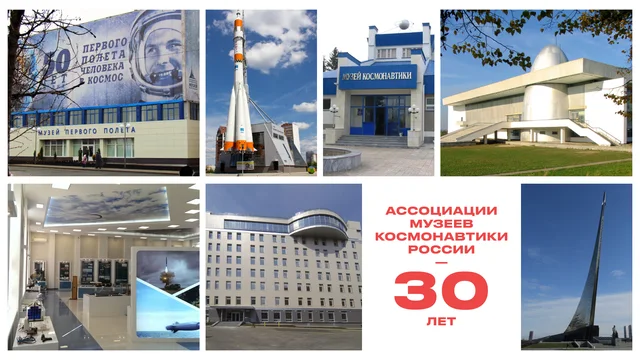

Архив типографии · 11.04.2021
30 лет Ассоциации музеев космонавтики России
В ноябре 2019 года Ассоциации музеев космонавтики (АМКОС) России исполнилось 30 лет.

Также в этом году исполняется 60 лет первому полёту человека в космос.
В нашей стране музеи космонавтики начали свою работу сразу же после успехов России в освоении космического пространства и особенно после появления пилотируемой космонавтики.
Появление Ассоциации музеев космонавтики СССР (теперь – России) в 1989 году дало возможность наладить работу между музеями, создать и осуществить целый ряд совместных проектов, таких как выставочная деятельность, выездные семинары, конференции и симпозиумы.
К тридцатилетию Ассоциации наш полиграфический комплекс «КЕМ» напечатал тираж книг «АМКОС 30». Это по-настоящему коллективный труд. В написании данного произведения искусства приняли участие 102 автора. С нашей стороны — полноцветная цифровая печать в твердом переплёте (7БЦ). Эстетичность и прочность печатного изделия подчёркивает клеевое бесшовное скрепление (КБС) с использованием ПУР(PUR)-клея ведущих мировых производителей, гарантируя при этом безупречный переплет, отличающийся высокой прочностью.
Посмотреть вид переплета
Книга рассказывает об истории создания и деятельности АМКОС, начиная с 5-летнего подготовительного периода, предшествовавшего моменту ее образования, и до настоящего времени.
Самые искренние слава благодарности выражаем редакционному совету: Джанибекову В.А., Дьячук И.Д., Майоровой В.И., Маринину И.А., Нечеса Я.В., Пономареву В.Л., Семенову А.С., Соломко Ю.М. Степановой М.В., Судакову В.С., Филиной Л.А. и идейному вдохновителю книги — Нине Семеновне Кирдоде.
Спасибо за сотрудничество! Приятно чувствовать себя чем-то большим…
ПК KEM – профессиональный полиграфический комплекс. Мы печатаем самые сложные и очень интересные с интерактивными элементами книги, на заказ с изящной и современной отделкой тонкой работы. Мы готовы предложить самые выгодные условия партнером, будущим авторам и другим клиентам.
Перед тем, как печатать книгу в первый раз, наши менеджеры помогут определиться Вам с такими характеристиками, как
- переплет;
- количество экземпляров;
- формат книги — книжный или альбомный;
- объем блока (количество страниц в книге);
- бумага блока;
- объем вклейки;
- какая будет бумага для вклейки;
- красочность обложки;
- материал обложки;
- дополнительная обработка.